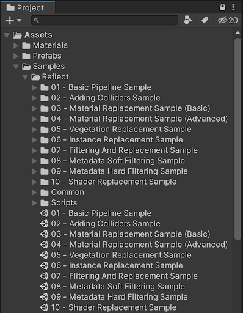
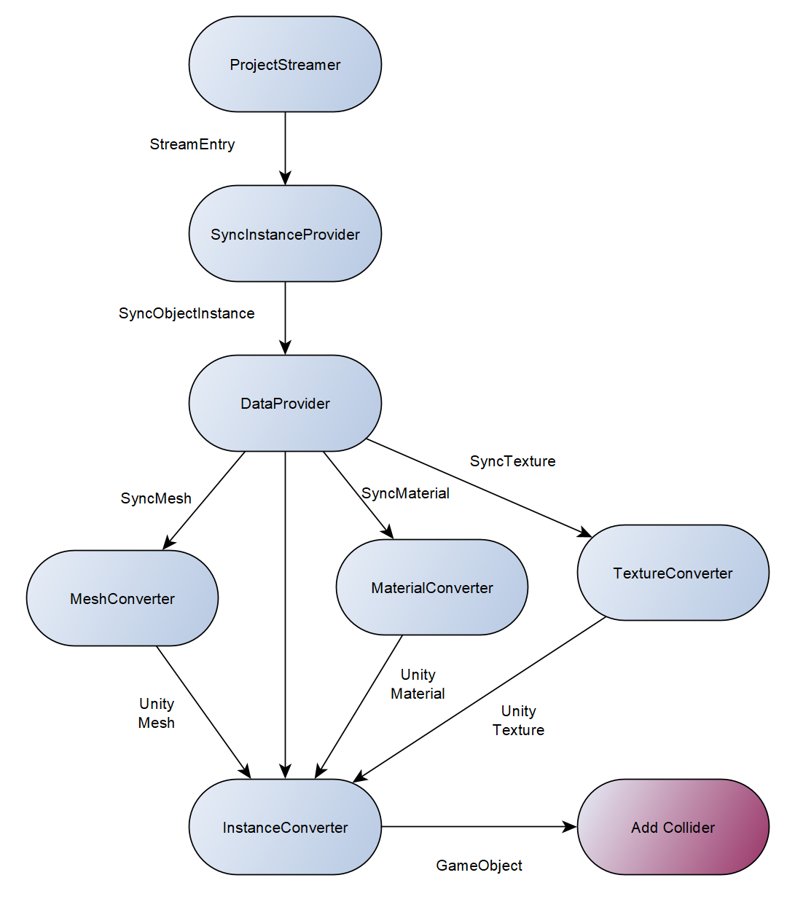
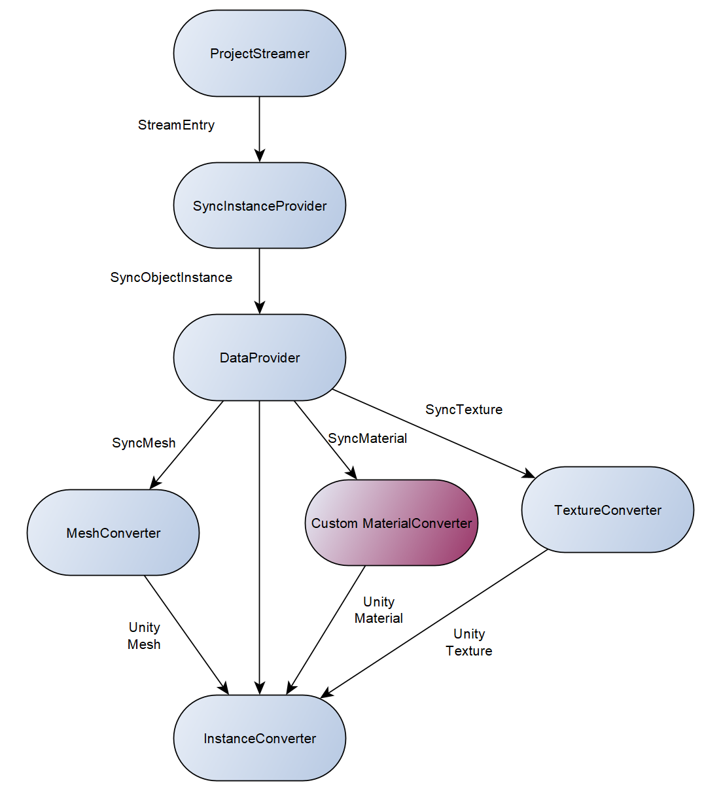

Samples
The Reflect development team provides sample code for common use cases. This code can be opened and executed from the Unity Editor without an internet connection, authentication, or cloud access.
Locating the sample code
To access the sample code, you need to have the Reflect package installed: see Installing the Reflect package for instructions.
To import the samples to the Unity Editor, open Unity Reflect in the Package Manager and click Import.

Once the samples are imported, you can access the code from the Projects menu in the Unity Editor under Assets > Samples > Reflect.

01 - Basic Pipeline
The simplest pipeline with the minimum number of required elements.
02 - Adding Colliders
Adds a node at the end of the pipeline to add colliders to the GameObject generated by the pipeline.

03 - Material Replacement (Basic)
Replaces Material after the GameObject is created.
04 - Material Replacement (Advanced)
Replaces Material using metadata, without downloading the original.

05 - Vegetation Replacement
Leverages metadata to replace some objects with a custom Prefab: in this sample, replacing Revit's vegetation RPC.

06 - Instance Replacement
Uses metadata to replace objects with a custom Prefab in a memory-efficient way.
07 - Filtering And Replacement
Combines two custom nodes to filter and replace some objects with a custom Prefab.
08 - Metadata Soft Filtering
Leverages Metadata on each object to create a visibility filter.
09 - Metadata Hard Filtering
Leverages Metadata early in the pipeline to prevent some objects from being generated in the scene.
10 - Shader Replacement
Replaces and customizes the Shader used to create the Material.